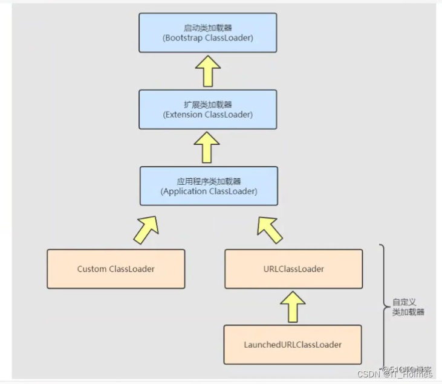

JVM相关知识
JAVA内存区域讲解
运行时数据区域分为两部分：线程共享和线程私有
线程共享区域：
堆：是虚拟机内存的最大的一块，此内存区域的唯一目的就是存放对象实例，几乎所有的对象实例以及数组都在这里分配内存，注意是“几乎”，JDK1.7之后，当方法中的对象引用没有被返回或者未被外部使用，就会直接在栈上分配内存。同时，堆也是垃圾收集器管理的主要区域，所以也被称为GC堆。
JDK1.8之前还有永久代实现的方法区，方法区是运行时数据区域的一个逻辑区域，在不同虚拟上方法区的实现是不同的，当虚拟机要使用一个类时，它需要读取并解析class文件获取相关信息，再将信息存入到方法区。方法区会存储已被虚拟机加载的类信息，字段信息，方法信息，常量，静态变量，即时编译器编译后的代码缓存。
方法区有两种具体实现：永久代permanent gen和元空间metaspace。前者拥有一个由本身JVM设置的大小上限，无法调整，而在8版本之后，转而使用元空间，后者使用的是计算机的直接内存，溢出的概率更小。
方法区内比较常见的有静态变量和字符串常量池，后者是为了减少string类的内存消耗而专门开辟的，可以避免字符串的重复创建。方法区是一个公共且抽象的概念，在不同虚拟机上可以有不同的实现。


线程私有区域：
- 虚拟机栈：由一个个栈帧组成，栈帧内包含：局部变量表（八大原始类型，对象引用），操作数栈（作为方法调用的中转站，存放中间计算结果，实现CPU的寄存器的功能），动态链接（当一个方法需要调用其他方法时，动态链接就是未来将符号引用转换为调用方法的直接引用），方法返回地址。方法调用的数据通过栈进行传递，每一个方法没调用时都会有一个对应的栈帧被压入，每一个方法调用结束后，都会有一个栈帧被弹出。当函数调用陷入无限循环，或者压栈太多，导致线程请求的栈的深度超过JAVA虚拟机栈的最大深度时，就会抛出,stackoverflow。栈帧的弹出：return语句，异常抛出，随方法的调用而创建，随方法的结束而销毁，所以无论方法是否正常完成还是异常完成，都可以视为方法结束。
- 本地方法栈：和虚拟机栈十分相似，但是本地方法是由c++编写的，所以这个栈是为native方法服务的，同样也会创建栈帧，同样也会抛出栈溢出的错误。
- 程序计数器PC：一块较小的内存空间，就是一个计数器，可以看作是当前线程执行的字节码的行号指示器，字节码解释器通过改变PC的值来选取下一条要执行的字节码指令，从而实现循环，跳转，异常处理等功能。每个线程都需要一个独立的PC，PC也是唯一一个不会出现outofmemory的内存区域。执行native方法时PC为空。
JAVA堆GC详解
堆分为三部分：新生代，老年代，永久代（JDK8移除，功能由元空间代替实现）
新生代Young Gen
新生代用来存放新生的对象，一般占据1/3。新生代中存放着大量刚刚创建的对象，但是大部分对象的存活时间都很短，所以会进行频繁的GC。新生代又分为三个部分Eden，SurvivorFrom，SurvivorTo 。这三个部分默认为8：1：1
为什么要分配为8：1：1
因为大部分对象都是朝生夕死，所以Eden区就设置大一些，存活区就设置小一些
Eden区：Java新创建的对象绝大部分会分配在Eden区（如果对象太大，则直接分配到老年代）。当Eden区内存不够的时候，就会触发MinorGC（新生代采用的是复制算法），对新生代进行一次垃圾回收。
SurvivorFrom区和SurvivorTo区：在GC开始的时候，对象只会存在于Eden区和名为From的Survivor区，To区是空的，一次MinorGc过后，Eden区和SurvivorFrom区存活的对象会移动到SurvivorTo区中，然后会清空Eden区和SurvivorFrom区，并对存活的对象的年龄+1，如果对象的年龄达到15，则直接分配到老年代。MinorGC完成后，SurvivorFrom区和SurvivorTo区的功能进行互换。下一次MinorGC时，会把SurvivorTo区和Eden区存活的对象放入SurvivorFrom区中，并计算对象存活的年龄。
老年代Old Gen
老年代用于存放生命周期较长的内存对象，老年代比较稳定，不会频繁的进行MajorGC。
而在MaiorGC之前才会先进行一次MinorGc，使得新生的对象进入老年代而导致空间不够才会触发。当无法找到足够大的连续空间分配给新创建的较大对象也会提前触发一次MajorGC进行垃圾回收腾出空间。
在老年代中，MajorGC采用了标记—清除算法：首先扫描一次所有老年代里的对象，标记出存活的对象，然后回收没有标记的对象。MajorGC的耗时比较长。因为要扫描再回收。MajorGC会产生内存碎片，当老年代也没有内存分配给新来的对象的时候，就会抛出OOM（Out of Memory）异常。
永久代Permanent Gen（方法区）
永久代中包含了虚拟机中可以通过反射获取到的数据，比如Class对象和Method对象。JVM用于描述应用程序中用到的类和方法的元数据，如类的层级信息(包名，父类名，修饰符，接口)，方法的编译信息（参数，返回值，修饰符）及字节码，常量，静态变量就存储在永久代中，如果有类不再需要使用，空间会被释放留给其他类，full GC会进行永久代的回收
不同的java虚拟机之间可能会进行类共享，因此又分为只读区和读写区
永久代是有大小上限的，默认为64M，在堆内存中划出一块连续的空间分配给永久代
元空间Meta Space
JDK8开始，永久代被彻底删除，替换为元空间，JVM忽略了permsize这个参数，也就是没有outOfMemoryError异常。
字符串常量池和静态变量也转移到了堆内存，因为字符串在永久代中容易造成性能问题
元空间使用本地内存来存储类的元数据，所以不再归JVM管理
为什么要抛弃永久代：
- 永久代的大小在启动时就会固定好，很难进行调优修改
- 元空间使用堆外内存，不由JVM管理，由OS来管理，所以可以不暂停GC的情况下释放类数据
- 元空间的每个类加载器都有专门的存储空间
- 充分利用了java语言规范的好处：类及相关的元数据的生命周期与类加载器一致
- 省略了GC的扫描和压缩的时间
- 元空间里面对象的位置是固定的，无需堆内存内GC时将对象不断移动
- 元空间只进行线性分配，指针碰撞+OS本地内存=大小上限提升，分配内存更迅捷
GC
堆内有大量的对象，所以需要GC来不断处理，以保证堆内存空间的合理使用
并行（Parallel）：多个GC线程并行工作，用户线程等待
并发（Concurrent）：用户线程和垃圾GC线程同时进行
如何判断一个对象能否被删除
被虚拟机栈，本地方法栈，静态变量，字符串常量引用的对象，不能被GC
若可以被删除：打上标记
- 标记清理算法：扫描一遍全部对象，删除带标记的对象，容易产生内存碎片
- 标记整理算法：扫描一遍全部对象，删除带标记的对象，清理后需要紧凑，不断移动对象，代价比较大
- 复制算法：分为1区和2区，无需删除的对象被紧凑复制到2区，然后清空1区，需要两倍的内存
- 分代算法：核心是同时发挥“标记整理”和“复制”的优点，让他们分别去处理最适合自己的情况。分代就是为对象设置年龄，在新生代就触发新生代GC也叫minorGC，在老年代就触发老年代GC，也叫major GC，当方法区空间不足时会触发全局GC，也叫full GC
新生代的GC
垃圾回收器：（全部都是复制算法，参考上文）
- Serial：最基本，历史最悠久的收集器。单线程，简单，适合于单CPU环境，没有线程交互的开销，所以可以全力进行垃圾回收。需要Stop The World，但是效率不高
- ParNew：其实就是多线程版的Serial，适合于多CPU环境，同样需要Stop The World
- Parallel Scavenge：吞吐量优先收集器，同样是并行的。PS自带GC自适应调节策略：动态设置Eden和存活区的比例，新生代的大小，晋升老年代的对象年龄。虚拟机会根据运行状态信息来动态调整以获取最优的吞吐量和响应时间。
老年代的GC
- CMS：回收停顿时间优先收集器，基于标记清除算法混合标记整理，并发（Concurrent），低停顿。
- Serial Old：老年代版本Serial，标记整理
- Parallel Old：老年代版本的Parallel，标记整理
CMS
低停顿的第一次尝试
- 初始标记：单线程+Stop The World，只扫描和GC root直接关联的对象
- 并发标记：并发，进行GC root tracing，在初始标记的基础上继续向下追溯标记，标记出所有存活对象，用户线程可并发
- 重新标记：Stop The World，修正并发标记期间因为用户线程的运行而造成的标记变动
- 并发清除：并发清除垃圾
并发标记和并发清除是可以和用户线程同时进行的，另外两个阶段需要Stop The World
特点：
- 对CPU资源非常敏感：在并发阶段，虽然是并发，但是由于会占用一部分的处理器资源，从而会影响用户线程的性能。CMS默认的回收线程数是（CPU核心数+3）/4，所以如果当CPU核心数小于4个，用户线程受到的影响就会非常大。CMS曾经提供过解决方法，就是在并发标记，并发清除的阶段让回收线程和用户线程交替进行从而减少影响。但是效果有限，在JDK9后就被彻底弃用了。
- 无法在一次GC流程中处理浮动垃圾：由于具有并发性，用户线程常常会在GC时产生新的垃圾对象，所以无法一次清除。所以需要为老年代设置阈值，JDK1.5是68%，JDK6是92%，当碎片过多时会直接触发GC进行整理。所以会出现一些极端情况，在一次GC还未结束时，老年代使用了91%的空间，且用户线程仍然在不断创建新对象，老年代已经无法容纳，此时会出现并发失败。虚拟机不得不冻结所有的用户线程，转而使用serial收集器来GC，此时效率就大大降低了。
- 容易产生空间碎片：因为使用的是标记清除，所以会产生空间碎片，在JDK9之前，设定在因为碎片过多而产生FULL GC时进行碎片整理，即对碎片有一定容忍度。
G1收集器
一款面向服务端应用的垃圾收集器，抛弃了传统的分代思想
步骤：
- 初始标记：单线程+Stop The World，只扫描和GC root直接关联的对象
- 并发标记：并发，进行GC root tracing，可达性分析，在初始标记的基础上继续向下追溯标记，标记出所有存活对象，用户线程可并发
- 重新标记：Stop The World，修正并发标记期间因为用户线程的运行而造成的标记变动
- 筛选回收：根据region的回收价值和用户期望的停顿时间来进行回收（stop the world）
特点：
- 以region代替分代思想：G1可以独自管理整个堆
- 可预测的停顿：G1能够建立可预测的停顿时间模型，能让使用者明确指定在一个时间段内，消耗在GC上的时间不超过N毫秒，原理：复制算法优先处理垃圾多的区域，可控
- 整体看是标记整理，region之间看是标记复制，不会产生碎片
C1和CMS的区别：
- 管理区域：C1可以管理整个堆，且会将堆分为若干个region来管理，region中可以划分新生代和老年代，且新生代和老年代的大小可以动态调整
- G1收集器可预测垃圾回收的停顿时间（建立可预测的停顿时间模型），这个是G1的优势
- 最后一个阶段，CMS是并发的，而C1不是
- G1产生的内存占用比CMS更高
G1如何实现可预测的停顿时间模型？
将region作为GC的最小单元，每次GC时都会跟踪每个region里垃圾堆积的价值，比如回收的代价，以及回收该region需要的时间，等因素进行综合评估。评估后会维护一个优先级列表，每次会优先处理回收价值最高的region。从而将GC效率最大化。
三色标记法
CMS算法的基础是通过可达性分析找到存活的对象，然后给存活的对象打个标记，最终在清理的时候，如果一个对象没有任何标记，就表示这个对象不可达，需要被清理，标记算法就是使用的三色标记。
并发标记阶段是从GC Root直接关联的对象开始枚举的过程
GC Root
- 虚拟机栈（栈帧中的局部变量表）中引用的对象
- 本地方法栈中 JNI（即一般说的 Native 方法）引用的对象
- 方法区中类静态属性引用的对象
- 方法区中常量引用的对象
对象的三个状态：
- 白色：这个对象还没有被访问过，在初始阶段，所有对象都是白色，所有都枚举完仍是白色的对象将会被当做垃圾对象被清理
- 灰色：这个对象已经被访问过，但是这个对象所直接引用的对象中，至少还有一个没有被访问到，表示这个对象正在枚举中
- 黑色：对象和它所直接引用的所有对象都被访问过。这里只要访问过就行，比如A只引用了B，B引用了C、D，那么只要A和B都被访问过，A就是黑色，即使B所引用的C或D还没有被访问到，此时B就是灰色。
大致流程：
- 首先我们从GC Roots开始枚举，它们所有的直接引用变为灰色，自己变为黑色。可以想象有一个队列用于存储灰色对象，会把这些灰色对象放到这个队列中
- 然后从队列中取出一个灰色对象进行分析：将这个对象所有的直接引用变为灰色，放入队列中，然后这个对象变为黑色；如果取出的这个灰色对象没有直接引用，那么直接变成黑色
- 继续从队列中取出一个灰色对象进行分析，分析步骤和第二步相同，一直重复直到灰色队列为空
- 分析完成后仍然是白色的对象就是不可达的对象，可以作为垃圾被清理
- 最后重置标记状态
可能出现的两种问题
- 一个本应该是垃圾的对象被视为了非垃圾
- 一个本应该不是垃圾的对象被视为了垃圾
解决方式
- 增量更新：站在新增引用的对象的角度来解决问题，在增加引用前添加一个写屏障，在屏障中记录新的引用。然后将引用关系中的黑色对象重新设置为灰色，在重新标记阶段再扫描一次，CMS
- 原始快照：站在减少引用的对象的角度来解决问题，当灰色对象要删除指向白色对象的引用关系时，就将这个要删除的引用记录下来，在并发扫描结束之后，再将这些记录过的引用关系中的灰色对象为根，重新扫描一次。G1使用，效率更高，但是会产生更多的浮动垃圾，只能等待下次GC
这也可以简化理解为，无论引用关系删除与否，都会按照刚刚开始扫描那一刻的对象图快照来进行搜索
垃圾收集器如何选择
Client模式下的虚拟机：Serial
注重高吞吐量以及CPU资源敏感：Parallel Scavenge +Parallel Old
最小化Stop The World时间：G1或者ParNew+CMS
类文件结构解析
字节码：.class扩展名
- 魔数：magic number：每个class文件的头4个字节被称为魔数（CAFEBABE）唯一作用便是确定这个文件是否为一个能被虚拟机接收的class文件
- class文件版本号：小版本号+大版本号。高版本的JVM可以执行低版本的class文件
- 常量池：常量池计数器+常量池数据区。计数器从1开始，若有某些指向常量池的索引值需要表达“不引用常量池中的项目”这一含义，则可以将索引值设为0。常量池数据区中主要存储两大常量：字面量：即文本字符串，或者被final修饰的常量等。符号引用：package，接口的全名，方法名称或描述符，字段名称或描述符等等。与c不同的是，java在编译时，不会有连接这一步骤，而是会在虚拟机加载class文件时进行动态连接，虚拟机在进行类加载时，将会从常量池中获得对应的符号引用，在类创建时或运行时解析，并翻译到具体的内存地址中。常量池中的每一项都是一个表。常量池可以看作是class文件里的资源仓库，占用空间最大。
- 访问标志：用于识别类或者接口的访问信息，比如class是类还是接口，public还是abstract，是否被final修饰等
- 索引集合：当前类，父类，接口索引集合
- 字段表集合：描述接口或类中声明的变量，不包括方法内声明的局部变量。字段计数器+字段表数据区
- 方法表集合：方法计数器+方法数据区
类加载过程
加载
加载主要完成下面三件事情
- 通过全类名获取定义此类的二进制字节流
- 将字节流代表的静态数据结构转换为方法区的运行时数据结构
- 在内存中生成一个代表该类的class对象，作为方法区数据的访问入口
连接——验证
- 文件格式验证：是否符合class文件格式的规范（CAFEBABE），主次版本号是否在虚拟机的处理范围内，常量池中的的常量是否都可以支持
- 元数据验证：对字节码的信息进行语义分析，保证描述的信息符合java的语言规范，比如这个类是否有父类，这个类是否继承了不被允许继承的类
- 字节码验证：这是最为复杂的一个阶段，通过数据流和控制流的分析，确定程序语义是合法，符合逻辑的，比如确保任意时刻操作数栈都能配合工作
- 符号引用验证：确保解析动作能正确执行
连接——准备
这个阶段会正式为变量分配内存并设置初始变量，仅包括类变量,static
连接——解析
将常量池里的符号引用替换为直接引用，主要针对，接口，字段，类方法。符号引用就是用一组符号来描述目标，可以是任何字面量；直接引用就是直接指向目标的指针，偏移量
初始化
这是类加载的最后一步，执行初始化方法
JAVA的类加载器
- Bootstrap类加载器：即引导类加载器，由C++语言实现，无父类。主要加载的是JVM自身需要的类，是虚拟机自身的一部分，它负责
/lib路径下的核心类库 或-Xbootclasspath参数指定的路径下的jar包加载到内存中，虚拟机按照文件名识别jar包，处于安全考虑，启动类加载器只加载包名为java,javax,sun等开头的jar包，即使将不符合要求的jar包丢入lib目录下也没法被识别。 - Extention类加载器：即扩展类加载器，是指sun公司实现的ExtClassLoader类，由Java语言实现，父类加载器为null，是Launcher中的静态内部类，它负责加载
/lib/ext目录 或者由系统变量-Djava.ext.dir指定位路径中的类库，开发者可以直接使用标准扩展类加载器。 - Application类加载器：即应用程序加载器，是指sun公司实现的appClassLoader，父类加载器为扩展类加载器。它负责加载class-path指定路径下的库类，也就是我们经常用到的classpath，一般情况下该类加载是程序中默认的类加载器。
- Custom自定义类加载器：负责加载用户自定义路径下的类包，父类加载器为应用程序加载器
类加载器的三大特征：
- 委托性：即双亲委派机制，当类A被加载时，首先会委托给父类加载器。引导类加载器会在lib目录下查找是否存在，找到便加载，未找到便回到扩展类加载器。扩展类加载器会在/lib/ext目录下查找，找到便加载，未找到便回到应用程序加载器。应用程序加载器会在classPath路径下查找，找到则加载，未找到则抛出ClassNotFoundException异常
- 可见性：父类加载器加载的类可以被子类观察到，但是子类加载的类对父类不可见
- 一个类只可以被加载一次
双亲委派机制：
HOTSPOT虚拟机对象创建的过程
类加载检测
虚拟机遇到new指令时，首先检查这条指令的参数是否能在常量池中定位到这个类的引用，检查这个符号引用代表的类是否已经被加载过，解析，或初始化。若没有，则先执行相应的类加载过程。
分配内存
为新对象分配内存，所需内存大小在类加载完成后就可以确定，分配内存的任务等同于将一块确定大小的内存从堆中划分出来。
- 指针碰撞：堆内存规整，将用过的内存和没用过的内存整合到两边，中间有一个分界指针，只需要将指针移动相应大小即可完成分配。
- 空闲列表：堆内存不规整，虚拟机会维护一个列表，列表中会记录哪些内存块是可用的，寻找到一块满足大小的内存分配后，更新列表。
初始化零值
当内存分配后，需要将分配到的内存空间都初始化为0值，这一步保证了对象的字段在java代码中可以不赋值就能直接被使用，程序能访问这些字段的数据类型对应的0值
设置对象头
这个对象是哪个类的实例，对象的HashCode，如何才能找到类的元数据信息，等信息处理后放入对象头中、
执行init方法
在虚拟机的视角来看，对象的创建已经完成，但是对于java程序来说，对象创建才刚刚开始，在init之前所有的字段都是零值，init之后便会将对象按照程序员的意愿进行初始化，一个真正可用的对象才算真正创建。
HotSpot的oop-klass模型
我们平时写的java类编译成.class文件，JVM加载.class文件，那么加载.class文件之后在JVM中就是oop-klass（C++）模型形式存在的
JVM内部基于oop-klass模型描述一个java类以及其实例
java类元信息用klass描述，对象用oop来描述

jvm在加载class时，会创建instanceKlass，表示其元数据，包括常量池、字段、方法等，存放在方法区
在new一个对象时，jvm创建instanceOopDesc，来表示这个对象，存放在堆区
其引用，存放在栈区；
在JVM中，Hotspot并没有将Java对象直接映射成C++对象，而是实现了Java的对象模型（oop-klass）
因为C++的对象里含有虚表，这个虚表实现了C++对象的多态，而JVM不希望每个对象中都包含一份虚函数表
所以就把对象模型拆成 klass 和 oop，其中 oop 中不含有任何虚函数，而 klass 就含有虚函数表
四种引用类型
强引用
一般创建对象时如Object obj=new Object()，obj指向堆内的instanceOOP，这个指向就是最常见的强引用
只要强引用存在，垃圾收集器就不会回收被引用的对象。
软引用
使用SoftReference类包装创建的对象如SoftReference
此时softRef会以强引用指向堆内的SR对象实例，然后SR会以软引用的方式再指向Object实例
当要发生内存溢出时，软引用对象会被回收，无论是否被引用。
对适合作为缓存的对象实例添加软引用，内存够的适合拿来即用，内存不够的时候就被回收，避免OOM
弱引用
和软引用类似，使用weakRefence类来进行包装
不过必要性再次降低，当GC时，无论内存是否够用，都会被回收
解决Map或者ThreadLocal的内存泄露问题
虚引用
使用PhantomReference来包装，PhantomReference
这个队列就是引用队列ReferenceQueue，虚引用必须指定相应的引用队列
虚引用也称作幽灵引用，虚引用并不会影响对象的生命周期，虚引用的特点就是可以充当信号量：
即当垃圾回收器准备回收一个对象时，如果发现它还有虚引用，就会在回收对象的内存之前，把这个虚引用加入到引用队列中，可以通过判断queue里面是不是有对象来判断你的对象是不是要被回收了
这个特性可以用于管理操作系统的本地内存：
一些网络编程框架如基于NIO的netty，会使用操作系统的本地内存块作为buffer来接收管道传输的数据，
通常会在JVM里创建指向这个内存块的指针来进行管理，而GC的范围仅限于JVM
所以就需要进行通知：当这个指针被回收时->虚引用进入队列->检测到队列里有虚引用->回收指针以及指向的OS内存块